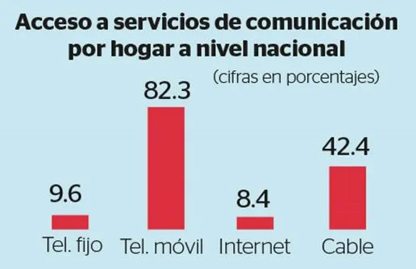
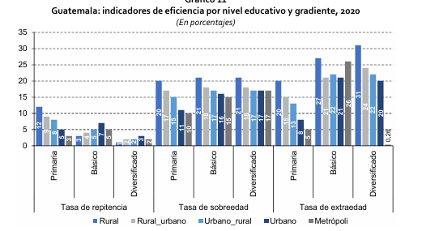
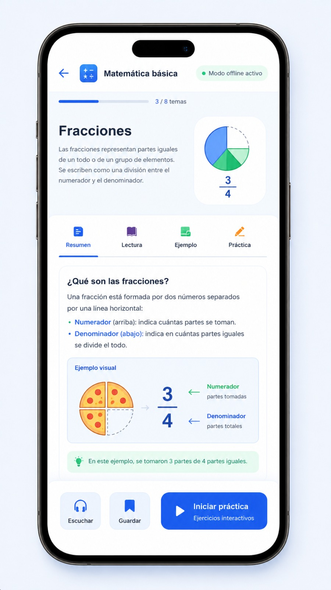
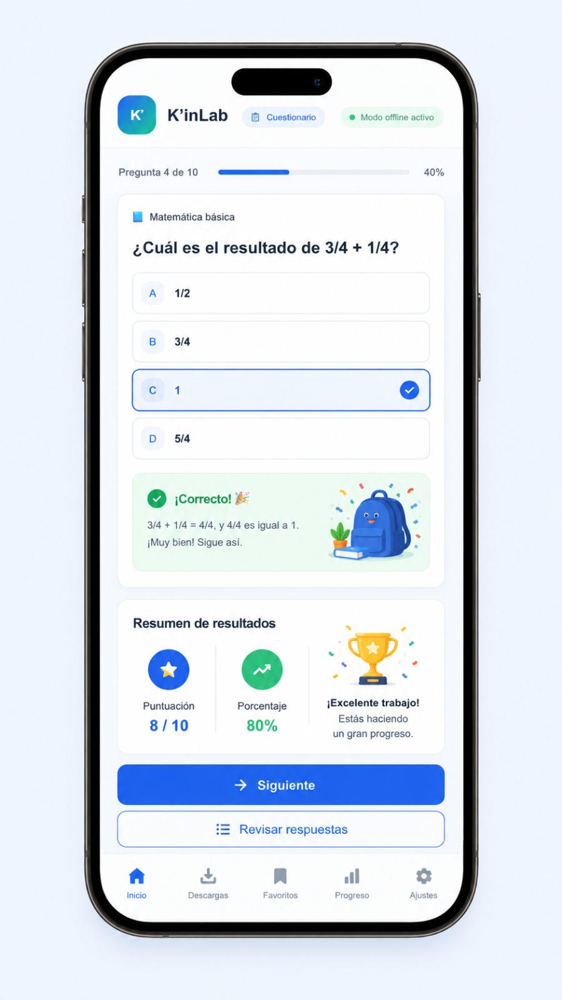
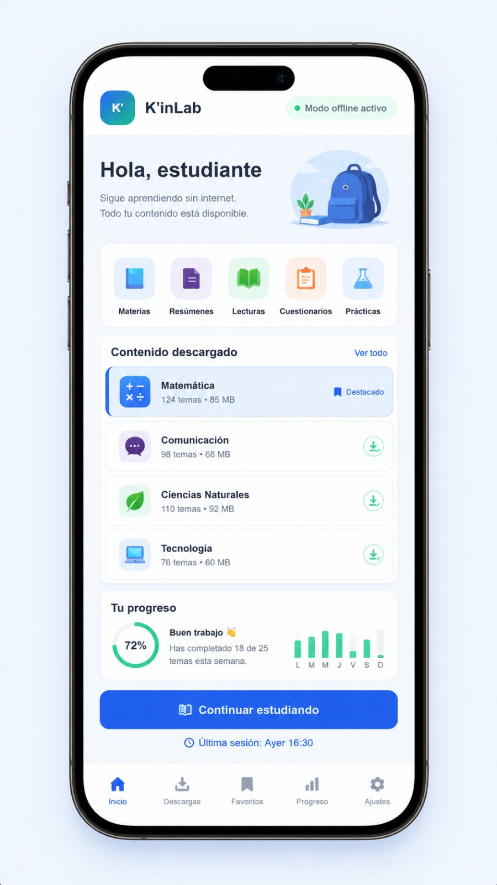
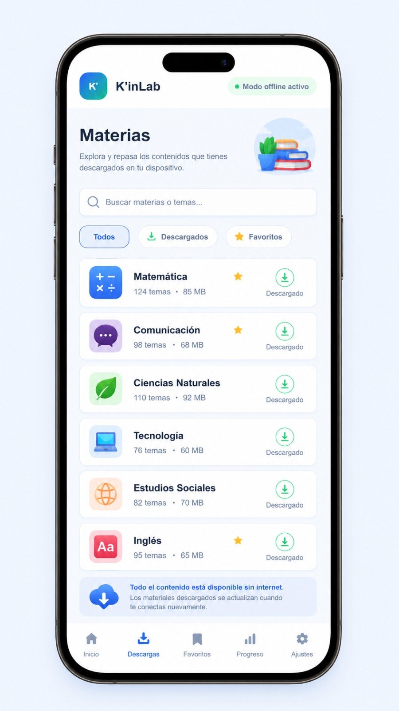

buscamos resolver vulnerable adaptabilidad tecnologica en Guatemala ayudando asi a las comunidades educativas
La realidad educativa en el altiplano de Guatemala expone una profunda crisis de infraestructura y conectividad. Mientras las escuelas rurales carecen de internet fijo y energía eléctrica estable, el destino del país se ve comprometido por una desconexión estructural que perpetúa la pobreza de aprendizaje, limitando las habilidades matemáticas fundamentales y la comprensión lectora básica.
Existe una brecha digital del 72% a nivel nacional, lo que significa que 7 de cada 10 guatemaltecos viven marginados del acceso a internet debido a la falta de inversión en telecomunicaciones en zonas rurales.
El 52% de los hogares no tiene una computadora, pero el 94% cuenta con acceso a un celular. El problema crítico es la escasez de plataformas educativas adaptadas para pantallas pequeñas que funcionen de manera offline.
Guatemala presenta una tasa de abandono escolar temprano del 51% entre jóvenes de 18 a 24 años, la más alta de América Latina. Cada año de escolaridad perdido reduce directamente los ingresos futuros y perpetúa el ciclo de vulnerabilidad.

Infografía estadística: Existe un 72% de brecha digital a nivel nacional frente al 94% de disponibilidad de teléfonos móviles en los hogares. Esto evidencia la oportunidad crítica para la sincronización oportunista y el desarrollo de la educación offline, transformando el dispositivo familiar en un motor de aprendizaje en el altiplano.
El internet comercial dejó fuera a las comunidades rurales, provocando una crisis sistémica: niños que avanzan sin comprender lo que leen y jóvenes que abandonan las aulas. Mientras el sistema educativo espera una infraestructura de red que tardará décadas en llegar, perder un solo año de escolaridad reduce drásticamente los ingresos futuros de toda una generación y perpetúa la pobreza. La desconexión no es un problema tecnológico; es un riesgo crítico de exclusión social y económica.

Operamos mediante un ecosistema de software diseñado para operar bajo sincronización bimestra. la plataforma aprovecha el hardware móvil existente en los hogares. habilitamos una transición directa hacia la autonomía pedagógica, garantizando un aprendizaje continuo y el reforzamiento cognitivo sin el uso de datos.
Ver el producto →Antes
Con k´inlabs
Desglose de la solución: módulos complementarios de nivelación, monitoreo autónomo in-app y transferencia offline de lecciones.
Módulos interactivos enfocados estrictamente en el desarrollo de la comprensión lectora y habilidades matemáticas. Funciona 100% offline para complementar las deficiencias del aula sin sustituir la escuela.
Funciona sin internetEl estudiante visualiza y controla su propio progreso cognitivo directamente dentro de la interfaz. La aplicación evalúa las respuestas en tiempo real de forma interna para fomentar el autoaprendizaje y la autoevaluación.
Progreso del alumnoSistema inteligente que permite al profesor actuar como proveedor y puente del contenido. Las lecciones se descargan de forma local en el dispositivo del alumno al detectar conectividad intermitente, quedando listas para el estudio.
Sincro-móvil



Interfaz del software mostrando los ejercicios de lectura comprensiva con el panel de progreso exclusivo para el alumno y la pantalla de carga de lecciones proveídas por el docente
Descubre cómo implementar nuestra app de nivelación autónoma y optimizar las pantallas del hogar para mitigar el rezago escolar — sin necesidad de conectividad fija.